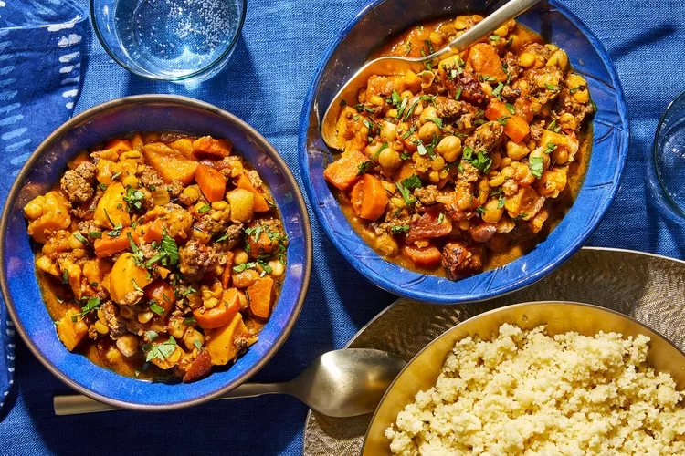

Sunday: Moroccan Lamb Stew

Description
This Moroccan-style stew with ground lamb was inspired by the wonderful spices and flavors used in Moroccan cuisine. We like to double the recipe and freeze one portion for later. We typically serve the stew with warm bread and a salad.
Ingredients
- 1 teaspoon ground cinnamon
- 1 teaspoon ground cumin
- 1 teaspoon kosher salt
- ½ teaspoon ground ginger
- ¼ teaspoon ground cloves
- ¼ teaspoon ground nutmeg
- ¼ teaspoon ground turmeric
- ⅛ teaspoon curry powder
- 1 pound ground lamb
- 1 tablespoon butter
- 1 sweet onion, chopped
- 2 (14.5 ounce) cans beef consomme
- 1 (15 ounce) can garbanzo beans, drained and rinsed
- 1 (14.5 ounce) can organic beef broth
- 1 (14.5 ounce) can organic chicken broth
- 1 (14.5 ounce) can diced tomatoes, undrained
- 2 medium sweet potatoes, peeled and diced
- 3 large carrots, chopped
- 1 cup dried lentils, rinsed
- ½ cup chopped dried apricots
- 1 tablespoon honey
- ground black pepper, to taste
Directions
- Combine cinnamon, cumin, salt, ginger, cloves, nutmeg, turmeric, and curry powder in a large bowl.
- Add lamb to spice mixture and mix until well combined.
- Melt butter in a large pot over medium heat. Add onion and sauté until soft and just beginning to brown, 5 to 10 minutes. Add spiced lamb; cook and stir until browned and crumbly, 6 to 8 minutes.
- Add consommé, garbanzo beans, beef broth, chicken broth, diced tomatoes, sweet potatoes, carrots, lentils, apricots, and honey; bring to a boil.
- Reduce the heat to low and simmer until vegetables and lentils are tender, about 30 minutes. Season with pepper.
Nutrition Facts
- 465 Calories
- 14g Fat
- 57g Carbs
- 28g Protein
Home